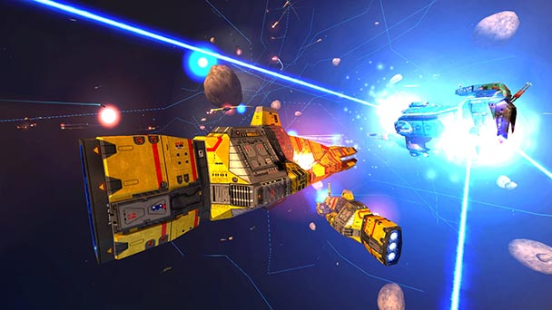
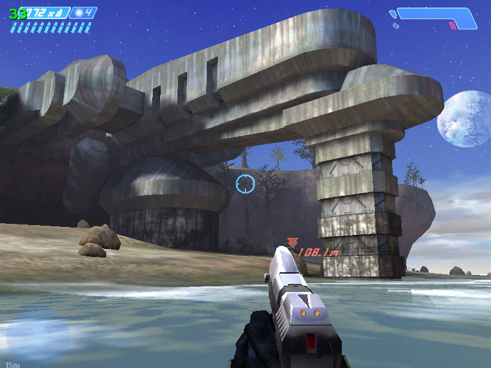
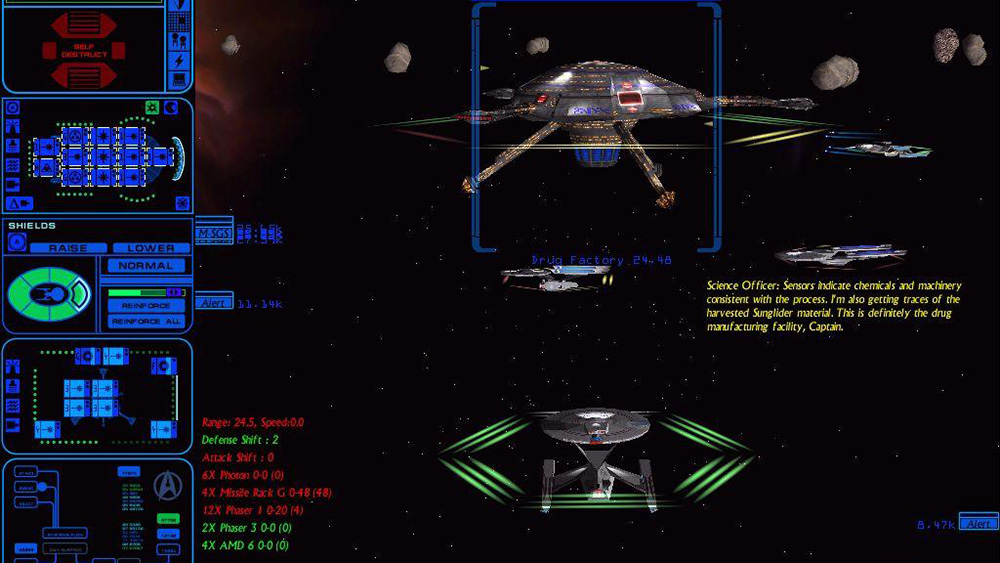
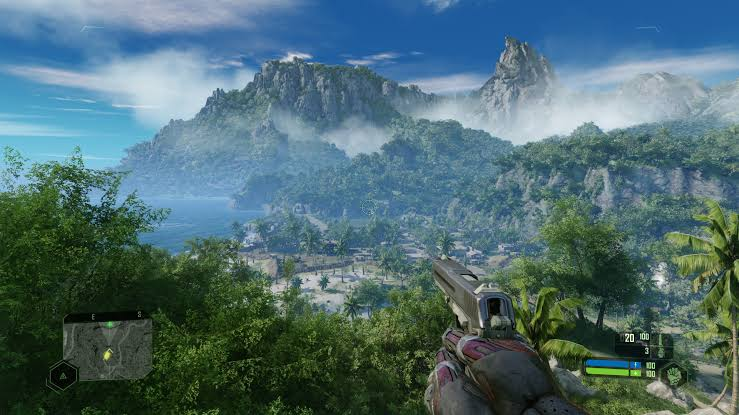
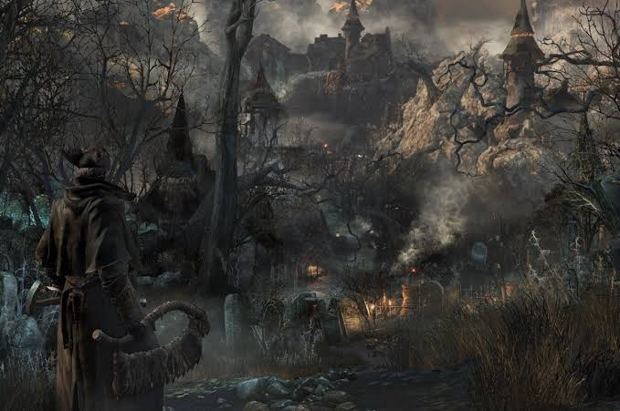
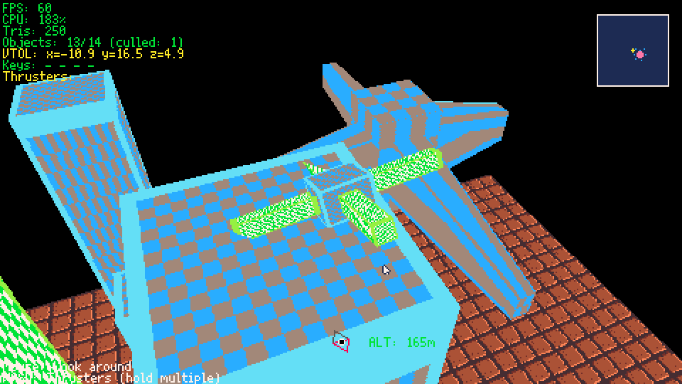
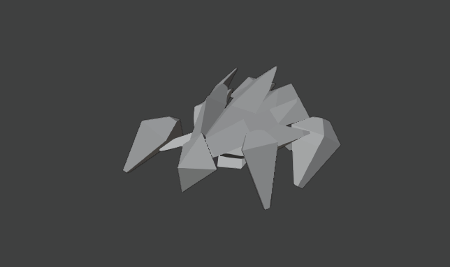

1UP000000
[ GAME START ]
x0
[ PLAYER INFO ]
Ruben's Influences
- ◆My Power-Ups: the games that inspired me!
- ◆How I fell in love with game making






[ BUILD ]
Making a Prototype
- ▣The "Cardboard" version of your game
- ▣Test ideas fast before adding pretty graphics




[ GRAPHICS ]
Animations!
- ✦Bringing drawings to life!
- ✦Frame-by-frame flipbook magic


[ RELEASE ]
The Road to Release
- 🚀Steam for indie developers
- 🚀Demos, Wishlists & Early Access!